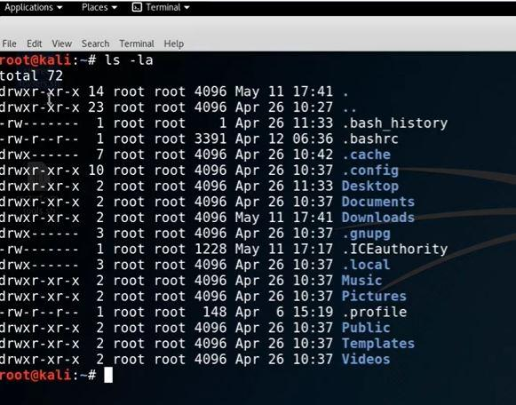

When we type the command ls -lathan if we see the first line there are 2 things :-
1st is if it's an hyphenwhich means it's a file.
2nd is if it's a dwhich means it's a directory.
After than rwx (i.e read write exceute). Here we have 3 groups.
1- owner of the group (i.e. drwx)
2- Permissions for the members of the group that owns the file. (i.e. Ownership) (i.e. r-x)
3- normal users (i.e. r-x)
chmodis used to change the mode that is permission of the file.
And will use chmod 777 as it will give us the read write execution persmission.
cat /etc/passwd will show all the users to us.
cat /etc/shadow will provide us the password.
Anybody can change the persmission in the sudoer's file if they are the sudo users.
As tmp folder had full read write execute permission.Will load some exploties into the temp folder during the penetration test
ls -la /tmp/
To add a user in Linux we have to use this command adduser username
and to switch b/w the normal user and root user we have to use this command: su username